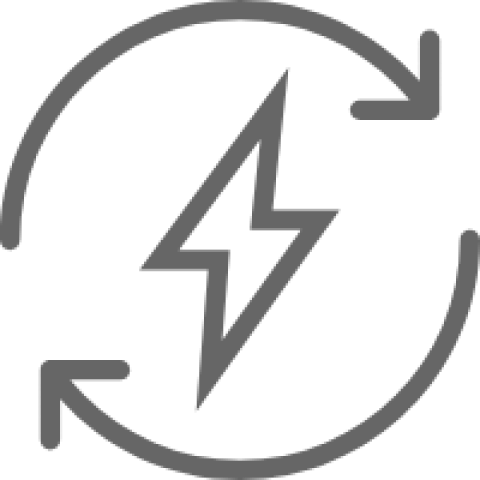
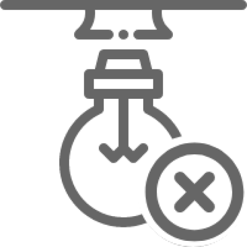
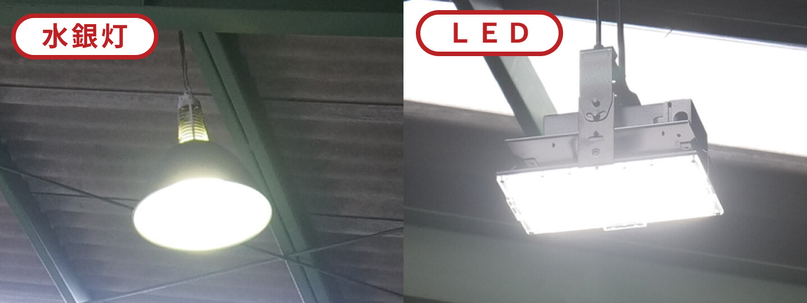
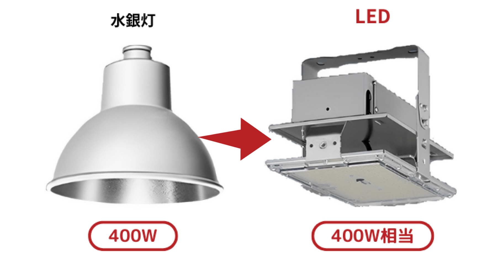
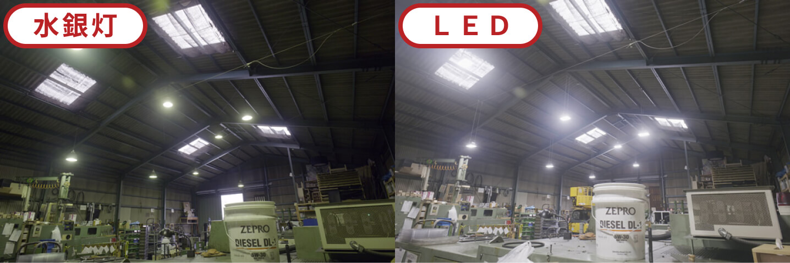
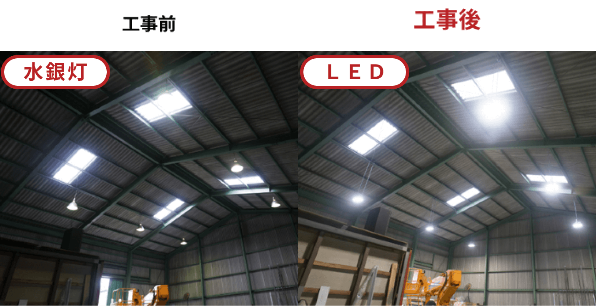
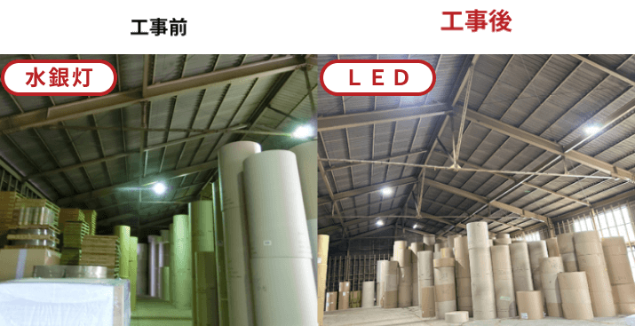
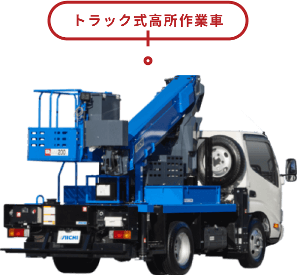
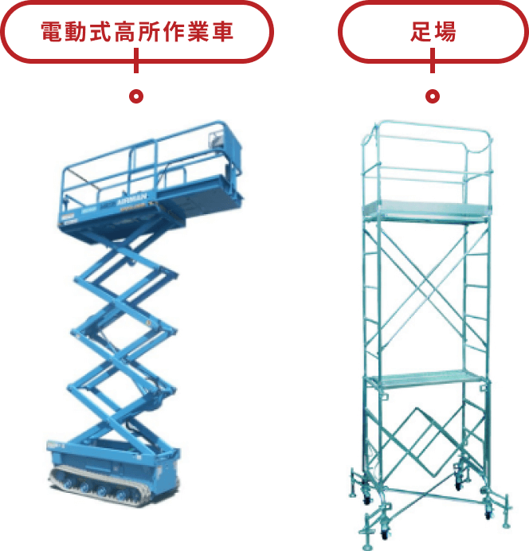

ジモデン登録の
電気工事店なら
(水銀灯400W→同等LED)
6台
363,000円(税込)
LED器具
標準工事
処分費
電気代削減 92,000円/年
水銀灯からLED交換で知っておきたい 交換費用相場と LEDのメリット


水銀灯からLEDへの交換
こんなメリットがあります
-
 約75％の消費電力削減
-
 水銀灯交換と廃棄が不要
-
明るくなって環境改善
色の見え方が改善


水銀灯からLEDへの交換費用と工事概要
Index
01 水銀灯からLEDへの交換工事概要とメリット
1 水銀灯からLEDへの交換工事の概要
-
水銀灯器具をまるごとLED交換をおすすめ
 - LED器具は明るさのグレードが多く、かなり明るくすることも可能。職場環境の改善につながります。
- 水銀灯の400Wから同等の明るさのLED器具への交換により、消費電力を約75％削減できる。
-
灯具を流用してLEDランプを設置する工事もありますが、耐用年数を超える灯具の使用により、ソケット破損や接触不良等のおそれがあるためおすすめできません。
水銀灯をLEDへ交換する場合は、器具ごと取替えをおすすめします。
2 水銀灯からLED交換により削減できる電気代
-
水銀灯400Wから
同じ明るさのLED器具へ交換 1台の消費電力 1台の年間電気代 水銀灯：415W (安定器含む) 水銀灯：24,900円/年間 LED ：84W LED ：5,040円/年間
(8h/日
250日/年
30円/kWhの場合)- 水銀灯からLEDへの変換により1台あたり19,860円の電気代削減
-
(高圧受電の場合×2/3となり、約13,240円の電気使用料の削減
＋デマンド0.33kwの削減)
ポイント！
- 水銀灯は2020年末に生産終了
- LED化により水銀灯の交換・廃棄が不要に
- 再エネ賦課金もあり、電気代は年々上昇
3 明るさと演色性アップで職場環境改善
-
LED化により
『明るさ』と『色の見え方』を改善 - 水銀灯を長期間使用すると、安定器やランプの劣化により100％の明るさで点灯していない場合が多く、同等の明るさのLED化により明るさが改善します。LEDは明るさのグレードが多く、明るさを大幅に改善することもできます。
- LED化により演色評価数が上がり、色の見え方が改善します。
02 水銀灯からLEDへの交換工事費用は？
水銀灯から
LEDへの工事費用例
水銀灯からLEDへの交換工事費用は、トラック式の高所作業車を使用でき、全ての工事を高所作業車で行える場合は標準工事で工事可能。
-
工事費用例１
【6台】水銀灯400WからLEDへの交換費用例
 6台で
363,000円(税込)LED器具
取替工事費
処分費
年間電気代削減金額92,000円(低圧受電)
上記費用で工事可能な条件
- 9,9mトラック式高所作業車（排気ガスがでる）により全ての作業可
- 屋内作業、平日の日中作業
- 照明器具の移設なし
-
工事費用例2
【6台】水銀灯1000WからLEDへの交換費用例
 6台で
770,000円(税込)LED器具
取替工事費
処分費
年間電気代削減金額289,800円(低圧受電)
上記費用で工事可能な条件
- 9,9mトラック式高所作業車（排気ガスがでる）により全ての作業可
- 屋内作業、平日の日中作業
- 照明器具の移設なし
03 水銀灯は2020年末で製造・輸出入が廃止に！
平成25年10月の水銀に関する水俣条約が採択され、一般照明用の高圧水銀灯は2020年末で製造・輸出入廃止が決定
水銀灯からLED化が必須
- 2024年時点でも水銀灯はネットショップで在庫販売がありますが、2020年と較べて約4倍に高騰
- 水銀灯は安定器と呼ばれる装置で点灯させています。安定器が故障した場合は水銀灯を新品へ交換しても点灯しません
- 水銀灯は発光効率が悪いため、LED化による電気代削減効果が大きく、３年～５年で工事費用を回収できることが多い。
04 水銀灯からLED交換工事のまとめ
1 2020年末で水銀灯の製造・輸出入が廃止
-
現在ネットショップで購入できる水銀灯は
HF400Xで約16,000円程！
廃止前は4,000円程
2 水銀灯からLEDへの交換費用 一般的な工場・倉庫
作業状況により大きく異なる工事費用
-
工事費用を最も抑えることができるのは下記の場合となります
 - 排気ガスの出るトラック式高所作業車で作業可
- 平日又は土曜日の日中作業
- 水銀灯と同じ位置にLEDを設置する
-
工事費用が高くなるのは下記の場合
 -
電動式高所作業車を使用するため、トラックでの運搬費が必要となる
(排気ガスを出せない、トラック式では狭くて入れない状況の時) -
足場を設置する場合
(電動式高所作業車でも作業エリアへ入れない) -
日、祝日の作業、夜間作業
(平日、土曜日の日中に作業ができない) - 食品、医薬品などを製造しており、特別な養生が必要
-
LED器具が一般型ではなく、無線調光式、粉塵や
高温環境向けの特別なLED器具が必要
-
電動式高所作業車を使用するため、トラックでの運搬費が必要となる
3 水銀灯からLEDへの交換のメリット
-
電気代の削減
水銀灯からLEDへの交換により、平均75％の消費電力を削減でき、水銀灯ランプ交換のコストを除いた電気代のみで約3～5年でLED化の工事費用を回収できる場合が多い
-
水銀灯の交換
廃棄が不要LEDの発光部は約40,000～60,000時間の長寿命。水銀灯の寿命は約12,000時間のため、ランプ交換・廃棄から解放されます。
※LEDの発光部は長寿命ですが、光らせる装置の寿命は10年とされていますので、約10年の使用で故障することが多くなりそうです -
明るさと演色性アップ
で環境改善水銀灯は長期の使用により、点灯が弱まっていることが多く、同等の明るさのLEDへの交換でも照度は20％～30％改善することが多い。
また、LEDは明るさのグレードが多く、かなり明るくすることができます。
電気工事施行管理20年の経験
保有資格：第一種電気工事士、１級電気施行管理技士。
電気工事の経験20年、独立後は自力で作成したホームページ集客のみで法人設立後も3年間黒字を維持。